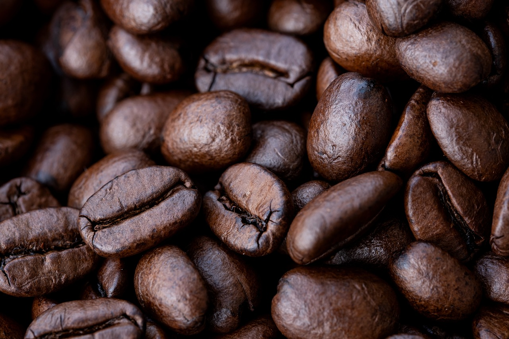

CAFÉ EXPRESSO
O café expresso nada mais é do que o café feito em uma máquina específica para ele.
Sabores de café expresso.
Qualidade
de Alto Padrão
O espresso é a base de quase todos os tipos de café.
Os baristas que fazem o café expresso usam água sob alta pressão para abrir caminho através do café moído compactado, que produz um líquido espesso e xaroposo, com uma linda camada de espuma marrom clara no topo, chamada crema.
O espresso é o método que melhor preserva as características naturais dos grãos, evidenciando propriedades como aroma, acidez, doçura e amargor de forma muito equilibrada.



CONHEÇA NOSSOS PROJETOS